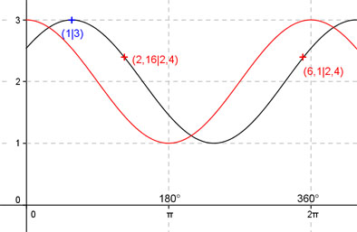

Aufgabe 207
Ergänzen Sie die Wertetabelle für x zwischen 0 und 2π:
y = cos (x - 1) + 2
x 1 2,16 oder 6,1
y 3 2,4
Amplitude = 1 ; Periode = 2π ;
cos (x - 1) + 2 bedeutet:
cos (x) + 2 ist um 2 Einheiten nach oben verschoben
und hat eine Phasenverschiebung (siehe unten) von
1 oder 57,3° nach rechts.
Berechnung der Nullstellen:
cos (x - 1) + 2 = 0 -->
Substitution (x - 1) = u -->
cos u + 2 = 0 |-2 -->
cos u = -2 -->
cos u kann nicht kleiner werden als -1, deswegen
existiert keine Lösung und damit keine Nullstelle.
-tan (x - 2) = 0 -->
Substitution (x - 2) = u -->
-tan u = 0 -->
u = k * π mit k = 0, 1, 2, ... -->
Rücksubstitution liefert
x - 2 = k * π |+2 -->
x = 2 + k * π
x1 = 2 oder 114,6°
x2 = 2 + π = 5,14 gerundet oder 294,5°.

Funktionswert an einer Stelle x ermitteln:
1 * 180°
x = 1 oder ---------- = 57,3°
π
f(1) = cos (1 - 1) + 2 = cos (57,3° - 57,3°) + 2 = 3.
Berechnung der x-Werte für y = f(x) = 2,4
f(x) = 2,4 eingesetzt, existiert für cos (x) + 2
zwischen 0 und π bzw. 0° und 180° und zwischen
π und 2π bzw. zwischen 180° und 360°.
cos (x) + 2 = 2,4 |-2 -->
cos x = 0,4 -->
x = arc cos 0,4 = 1,16 -->
x1 = 1,16
x2 = (2π - 1,16) = 5,12 gerundet.
(siehe Einheitskreis)
 Unter Berücksichtigung der Phasenverschiebung:
2,16 * 180°
x1 = (1,16 + 1) = 2,16 oder ------------- = 123,8°
π
x2 = (5,12 + 1) = 6,12 (6,1 gerundet) oder 349,5°
Unter Berücksichtigung der Phasenverschiebung:
2,16 * 180°
x1 = (1,16 + 1) = 2,16 oder ------------- = 123,8°
π
x2 = (5,12 + 1) = 6,12 (6,1 gerundet) oder 349,5°